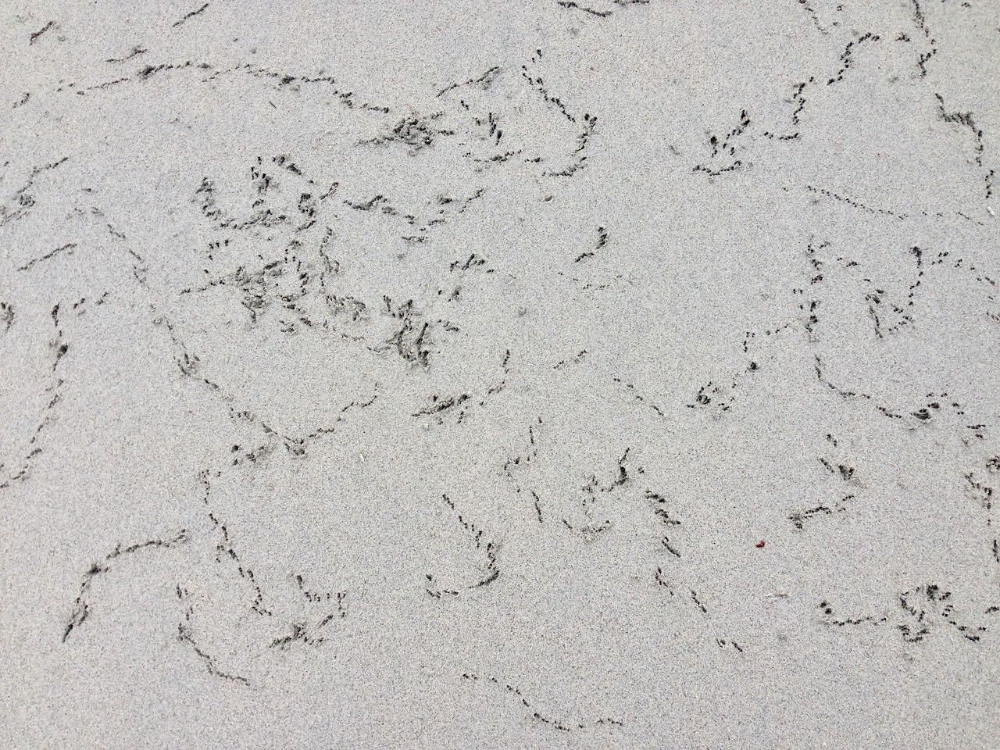

The Digital Islands part of Cridhe Crois-Shlighe is about developing and supporting digital skills on North Uist, Benbecula and South Uist. The vision for the project is broad: teach code to children, teach code to adults, support existing projects and develop software and websites for local endevours. Follow @Digital_Islands
